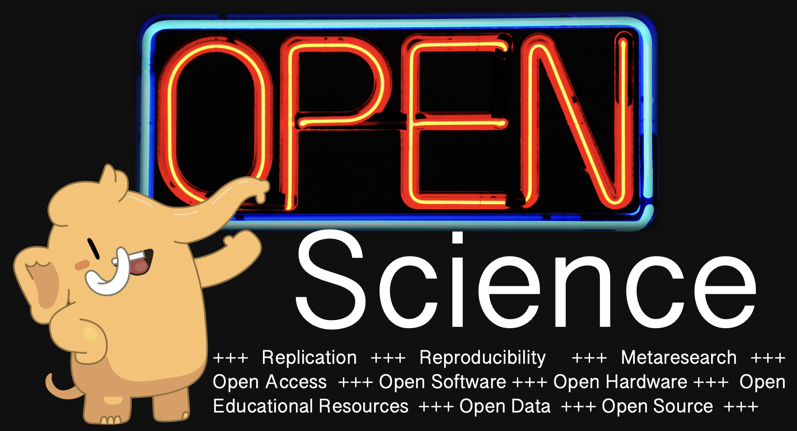

Get in touch with the Open Science Community from around the world on Mastodon! This page lists accounts of people interested in Open Science, Metaresearch, Replication, Reproducibility, Open Educational Resources, Open Access, Open Data, Open Source, Open Hardware, Open Software, Open EVERYTHING. It also offers an easy method to follow multiple accounts at once. Just decide if you want to follow all or only some of the accounts listed below. You are provided with a .csv-file, which you can upload in Mastodon in order to follow all accounts included. Here you can find a short instruction, on how to do this.
If you want to be added to the list, correct your info, or be removed, contact me at @rmrahal@nerdculture.de or via email.
